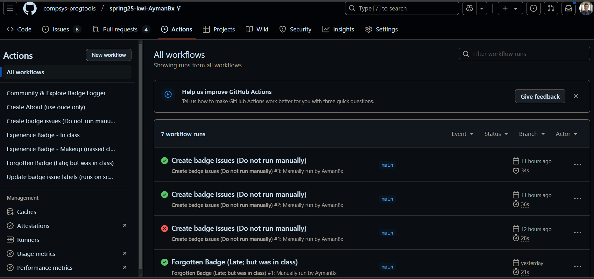

2. More orientation#
Today we will:
continue getting familiar with the structure of GitHub
clarify more how the course will flow
practice with new vocabulary
Last class was a lot of new information, today we will reinforce that mostly, and add only a little
2.1. Warm up#
Navigate to your KWL repo
Find the issues tab
Open the prepare-2025-01-28 issue and discuss the questions with your classmates at your table
If you have issues that currently say Error: not found (prepare 01-30 and practice 01-28)
*hint: my KWL repo URL is: https://github.com/compsys-progtools/spring25-kwl-AymanBx
What do you associate “learn new vocabulary” with?
Note: it is actually always the first step of learning, or joining a community.
What are GitHub issues for?
[x] bug reporting and tracking
[ ] proposing changes to the code by comparing two branches
[ ] discussing things tangentially related to the code
What are GitHub issues for in our class?
[ ] discussing things tangentially related to the code
[ ] proposing changes to the code by comparing two branches
[x] Assignment or issue that needs to be fixed in out repo/project
What are Pull Requests for?
[ ] bug reporting and tracking
[x] proposing changes to the code by comparing two branches
[ ] discussing things tangentially related to the code
What are Pull Requests for in our class?
[ ] bug reporting and tracking
[x] Request an instructor to view my work and approve it or comment on it
[ ] discussing things tangentially related to the code
Go to you PR tab
What is an experience badge?
[ ] A way to prove I was in class (take attendance)
[ ] A program that means at the end of the semester I get a medal for each one I have
[x] A way to remind my future self and show my instructor what I’ve learned from class and ask questions
2.2. How do we work with experience badges#
Checklist:
Merge prepare work into this PR
Link prepare issue to this PR
Complete experience report
Add activity completion evidence per notes
We fixed the forgottenexperience.yml file and then ran it manually.
2.3. Making up for action issue last week#
Yesterday we fixed the issue with our actions and were able to run the Forgotten badge action
What date did you make your experience badge for?
Date is supposed to be 2025-01-23
Redo and copy the content from the old one
Then we edited the file it created to add a title on the line with one # (should be line 10) uisng the 3 dots menu in the top right of the file on the files changed tab of the PR.
Which of the following is true? hint: look at your experience badge from yesterday (and chat with neighbors)
[ ] once a PR is open you cannot add commits to either branch involved
[ ] once a PR is open if you add commits to the proposing branch, you have to open a new PR
[x] once a PR is open if you add commits to the proposing branch, they are visible in the existing PR
2.3.1. Remember#
Your experience pull request (badge) already had a changed file in it And then you edited the file again to answer the existing prompts
Note
When you add more commits to a branch that has a PR, it automatically updates the PR.
2.3.2. Where does this file exist?#
Find the message that says github-actions wants to merge 1 commit into main from experience-<somenumber>
2.3.3. What does this experience- represent?#
This is a branch kf your repo that has one file that is new (different from the main branch where that file is missing).
This file is the experience report that you are asked to fill out after every lecture
2.3.4. How do I know the location of the file?#
Note
Here we are learning by example and then synthesizing that into more concrete facts.
my goal is to teach you to get better at learning in that way, bc it is what employers will expect
To do this:
I set up opportunities for you to do the things that give you the opportunity
highlight important facts about what just happened
ask you questions to examine what just happened
This is why attendance/participation is a big part of your grade.
Experience badges are evidence of having learned.
There is a time breakdown in the syllabus that suggests and recommends a good way to distribute your time in the semester for the class.
Take a minute to think about how you use your time and what that breakdown means for how you will plan.
Then we will use the tools to examine the field of Computer Science top to bottom (possibly out of order).
2.4. Programming is Collaborative#
There are two very common types of collaboration
code review (working independently and then reviewing)
pair programming (sitting together and discussing while writing)
We are going to build your skill in the code review model. This means you need to collaborate, but collaboration in school tends to be more stressful than it needs to. If students have different goals or motivation levels it can create conflict. So there will be some chances for collaboration where people can show up at the level they want without impacting others.
You can also do build badges collaboratively, for a closer collaboration, but those are your choice.
2.5. GitHub Actions Tab#
GitHub allows us to run scripts within our repos, the feature is called GitHub Actions and the individual items are called workflows.

this should be different from yours, because I tested things in mine before making your PRs
On my actions page, in the screenshot above, how many successful workflow runs are shown?
[ ] 4
[ ] 5
[x] 3
On my actions page, in the screenshot above, how many total workflow runs are shown?
[x] 4
[ ] 5
[ ] 3
On my actions page, in the screenshot above, how many workflows are available to run?
[ ] 4
[x] 7
[ ] 5
Your time to practice:
Navigate to your actions tab
Run the “Create About (use only once)” Action.
You should have:
fixed action files
Labs issues closed
experience report for 2025-01-23
2.6. Prepare for next class#
View all existing issues (Prepare, View)
Select one out of the two for each date and complete the tasks in it. (Pick wether you want to do practive or review for a certain date)
Make sure you ask for out review on any open pull request (other than feedback)
Choose where you want to save files for this class locally on your computer and make note of that location. (nothing to submit; but we will be working locally and you need to have a place)
Think about how you think about files and folders in a computer. What do you know about how they are organized? how they’re implemented? (nothing to submit)
2.7. Badges#
the text in () below is why each step is assigned
review today’s notes after they are posted, both rendered and the raw markdown versions. Include links to both views in your badge PR comment. (to review)
“Watch” the course website repo, specifically watch Releases under custom (to get notifications)
map out your computing knowledge and add it to your kwl chart repo. this can be an image that you upload or a text-based outline in a file called prior-knowledge-map. (optional) try mapping out using mermaid syntax, we’ll be using other tools that will faciltate rendering later (what we will learn will connect a lot of ideas, mapping out where you start, sets you up for success)
the text in () below is why each step is assigned
review today’s notes after they are posted, both rendered and the raw markdown versions. Include links to both views in your badge PR comment. (to review)
read Chapter 1, “Decoding your confusion while coding” in The Programmer’s Brain add a file called brain.md to your kwl repo that summarizes your thoughts on the chapter. Do you think this information will help you approach learning more effectively? why or why not? How, if at all, does it changes how you think about debugging and learning to program? Give examples of how you have encountered the different types of confusion in your prior programming experiences. (to help you get good strategies and prime for things we will see in the next few weeks)
“Watch” the course website repo, specifically watch Releases under custom (to get notifications)
map out your computing knowledge and add it to your kwl chart repo in a file called prior-knowledge-map.md. Use mermaid syntax, to draw your map. GitHub can render it for you including while you work using the preview button. (what we will learn will connect a lot of ideas, mapping out where you start, sets you up for success)
Read more about version control in general and add a “version control” row to your KWL chart with all 3 columns filled in. (git is version control, but not the only one)